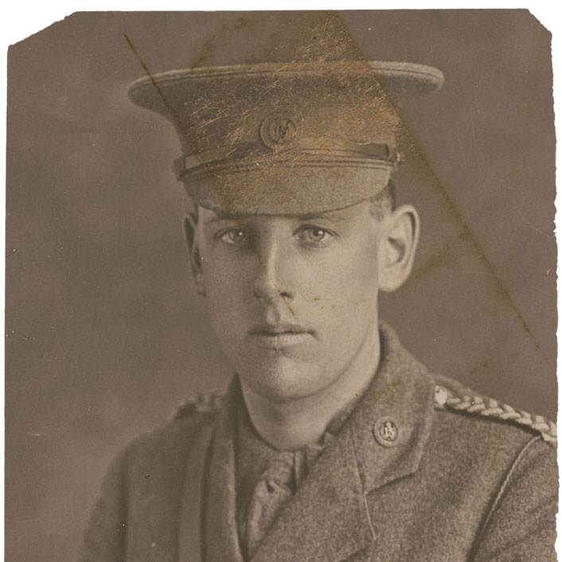

Noel Steadman
DOB: 26/12/1890
Service ID: 12/4
Place of Birth: Whangarei, New Zealand
DOD: 15/05/1915
Occupation: WW1 Electrical engineer
Place of Death: Dardanelles, Gallipoli, Turkey.
Cause of Death: Killed in Action
Biography:
Noel Steadman
Noel Steadman was the son of Lieutenant-Colonel Thomas Herbert Steadman (Territorial Force, 15th (North Auckland) Regiment) and Edith Minnie Steadman of Whangarei.
He was a pupil at Whangarei High School during 1904 and 1905 but left in 1906 to enter King’s College in Auckland.
After leaving school he devoted his studies to engineering.
When war broke out he enlisted and left with the Main Body as a lieutenant in the Auckland Infantry.
He took part in the defence of the Suez Canal and the landing at Gallipoli and was afterwards killed on the 8th May 1915 in the attack on Krithia in the Dardanelles.